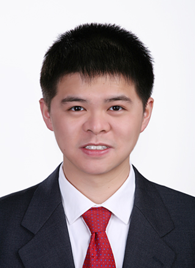
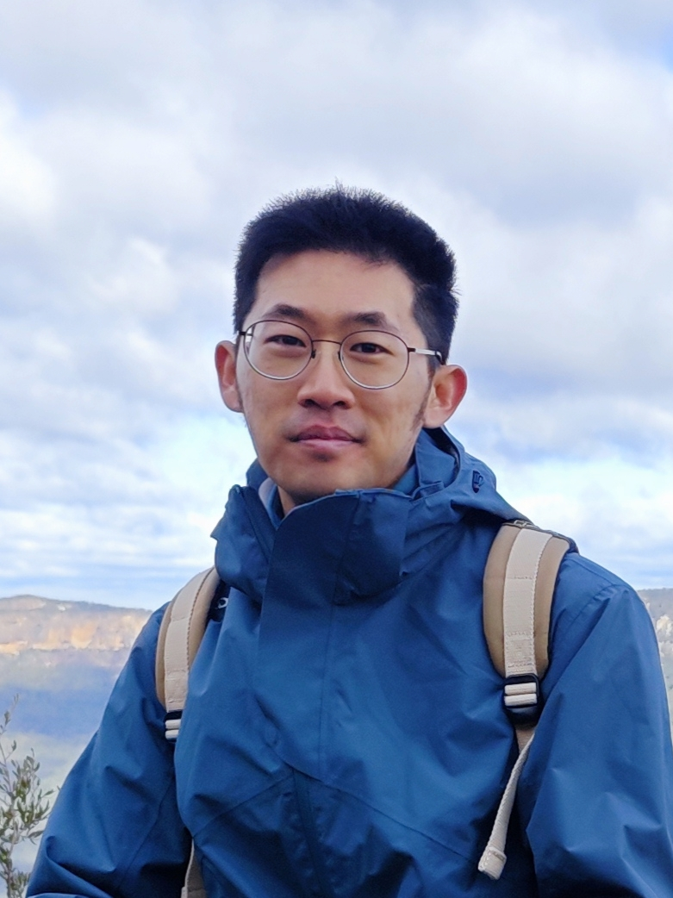
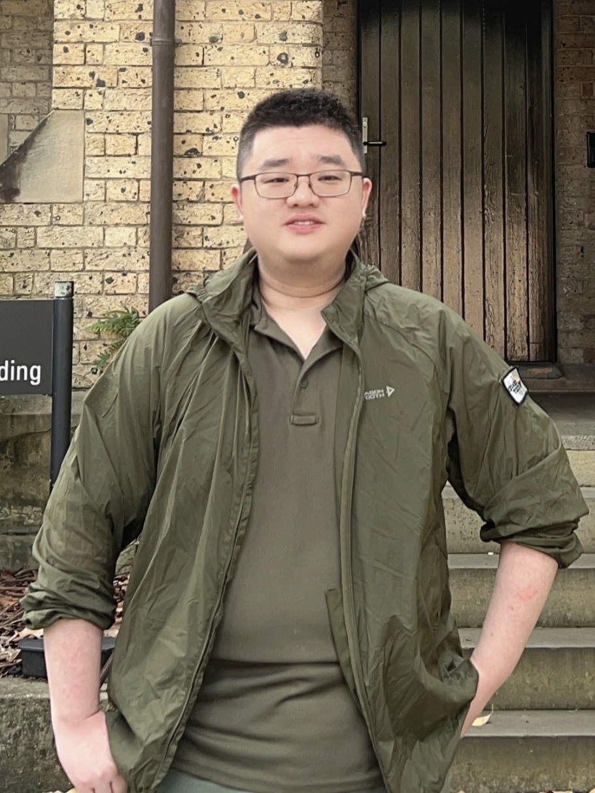
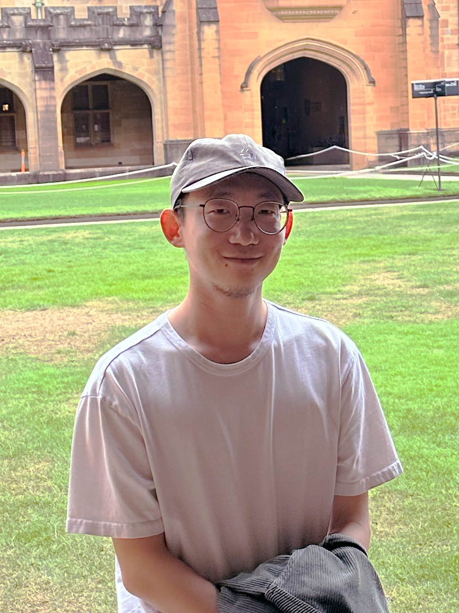
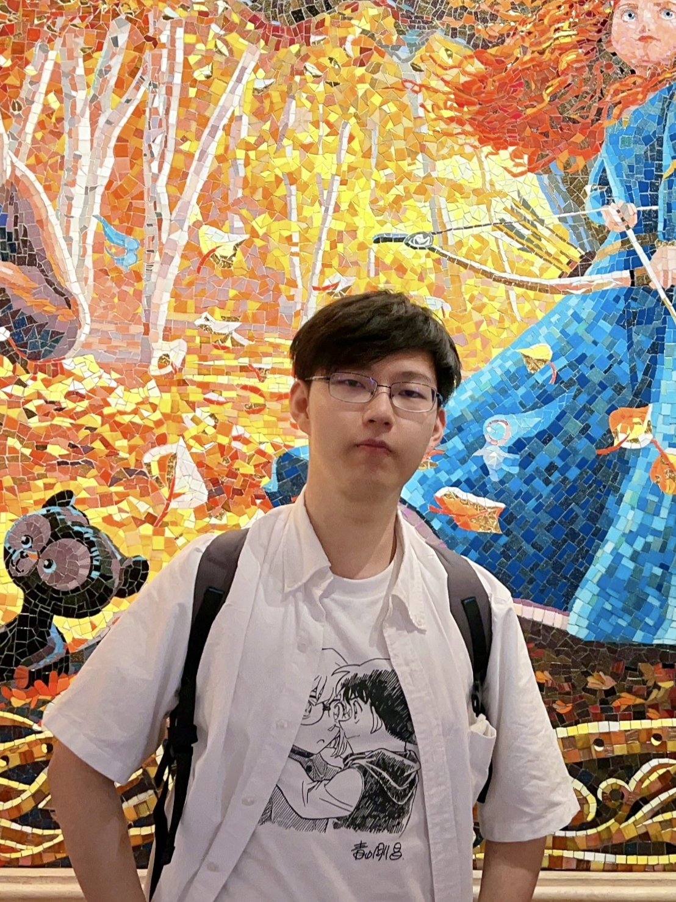
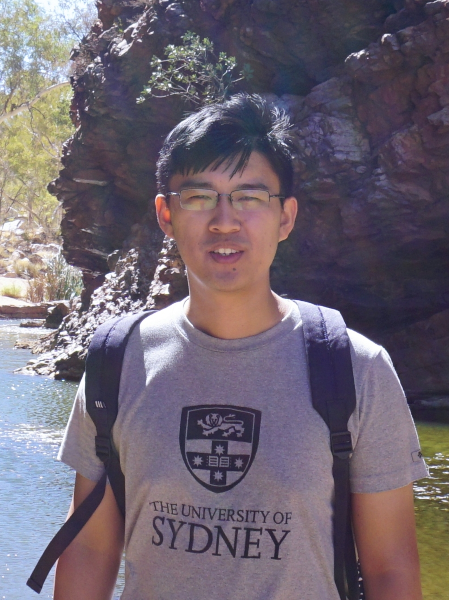

PhD students
|  | Liming Ge | Liming Ge is currently a 4th-year Ph.D. student. He received the Bachelor of Information Technology (1st Class Honours) degree in the School of Computer Science, the University of Sydney. Currently, Liming’s research focuses on AI-enhanced real-time video delivery. As a keen digital enthusiast, Liming has a passion for tinkering with all sorts of electronic gadgets (mobile phones, routers, etc.). He is curious and enthusiastic about the latest technologies. He also loves travelling and civil aviation and enjoys exploring the different cultures worldwide. |
|  | Binghan Wu | Binghan Wu received the Bachelor of Engineering degree in Computer Science from the ShanghaiTech University, Shanghai, China, in 2018, and the Master of Engineering degree in Software Engineering from The University of Sydney, Sydney, Australia, in 2020. His current research interest is in online algorithms and their applications (including pricing, scheduling and resource allocation) in edge\cloud systems. His hobbies include cycling, hiking and badminton. |
|  | Sen Fu | Sen Fu is currently a 3rd year PhD student. He received the Bachelor of Computer Science and Technology (Advanced) (Honours) degree from the University of Sydney in 2021. His research is centered on distributed machine learning, federated learning, and partial label learning. Outside of academia, Sen loves to travel, especially exploring local foods and cultures with enthusiasm. |
|  | Ruoyu Wu | Ruoyu is currently a 1st-year Ph.D. student. He received the Master of Information Technology and Master of Information Technology Management degree in the School of Computer Science, the University of Sydney. Ruoyu's Research focuses on stochastic online resource allocation and scheduling, and he has published two research papers. Ruoyu enjoys writing and playing the violin. He has a deep admiration for the works of Albert Camus. |
|  | Xinyi Sheng | Xinyi Sheng is currently a 1st-year Ph.D. student. He received the Bachelor of Advanced Computing degree (1st Class Honours with University Medal) in the School of Computer Science, the University of Sydney. Xinyi’s research focuses on machine learning, deep learning, AI ethics, and distributed computing. Xinyi loves watching movies and animations, he also enjoys playing table tennis in his spare time. |
MPhil students
Yuxuan Feng
Yichen Guo
Zhiqian Zhao
Alumni
| Dr. Zizhao Wang | Zizhao Wang is an esteemed alumnus of our research group, having graduated with distinguished achievements. His research was concentrated on network optimization and scheduling, during which he received the Best Paper Award at the ACM International Conference on Modeling, Analysis and Simulation of Wireless and Mobile Systems in 2019. Following his graduation, Zizhao has embarked on a professional journey as a developer at Linkpos Technology Solutions. Outside of his academic and professional pursuits, Zizhao enjoys fishing, playing soccer, and driving manual transmission vehicles. | |
|  | Dr. Zhengjie Yang | Zhengjie Yang is a distinguished alumnus, now pursuing an exciting career as a postdoctoral researcher at the City University of Hong Kong. His academic journey, which began with a Master of Information Technology degree from the School of Computer Science at the University of Sydney, was further enriched by his experience as a software developer prior to joining our group. His research in distributed computing, underscored by co-authoring two research papers, highlights his commitment to contributing valuable insights to the field. Apart from his academic and professional pursuits, Zhengjie is also celebrated for his exceptional talent in playing the Erhu, earning recognition as one of the best young Erhu players in Sydney. |
Group photo

From left to right: Dr. Zhengjie Yang, Binghan Wu, Ruoyu Wu, Yuxuan Feng, Dr. Zizhao Wang, Dr. Wei Bao, and Liming Ge.